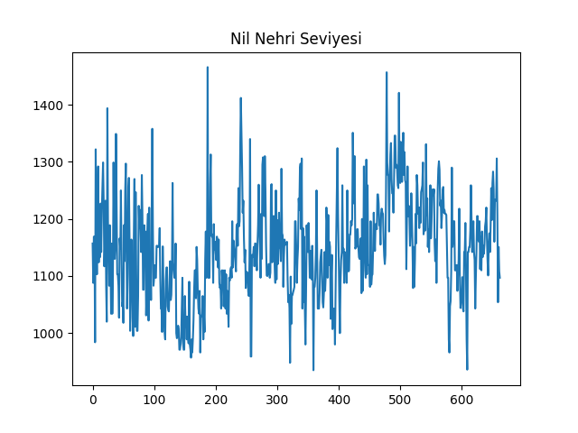
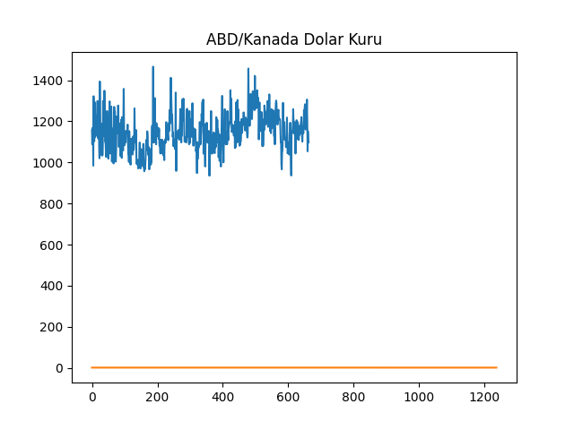
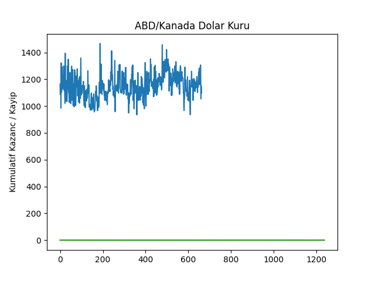

Durağanlık ve Testler
Bazı durumlarda bir durağan seriyi çıplak gözle bakarak tanıyabiliriz. Her zaman bu mümkün olmayabilir fakat bariz durumlarda bunu anlamak, hatta anlayabilmek lazım.
Bir durağan serinin grafiği sabit bir seviye etrafında salınım yapıyor olmalıdır, ki bu fenomene ortalamaya dönüş (mean-reversion) adı verilir. Yani seri yükseliyor, azalıyor olabilir, ama sürekli belli bir değere rutin şekilde dönüş yapıyor olmalıdır. Seri içinde bazı noktalarda bir zıplayış ta görülebilir, eğer bu zıplayış düzenli aralıklarla oluyorsa yine durağanlığı bozmaz.
Mesela altta Nil Nehrinin seviyesinin ölçümü MS 622-1284 arasında alınmış, bu seriyi grafikleyelim,
import pandas as pd
nile = pd.read_csv('nile-water-level.csv',header=None)
nile[1].plot()
plt.title('Nil Nehri Seviyesi')
plt.savefig('tser_mean_01.png')

Onun durağan olduğunu görüyoruz. Diğer yandan ABD Doları / Kanada Doları arasındaki döviz kuru gösterilmektedir, bu verinin alttaki dosya içinde sadece 16:59 itibariyle kapanış fiyatlarını baz aldık, 1 dakikalık bir kesit bu,
import statsmodels.tsa.stattools as st
import pandas as pd
df_caus = pd.read_csv('USDCAD.csv')
df_caus['y'].plot()
plt.title('ABD/Kanada Dolar Kuru')
plt.savefig('tser_mean_02.png')

Bu zaman serisi durağan değildir.
Durağanlık senet al/sat için kullanılabilecek bir faktördür. Çünkü ortalamaya-dönüş / durağanlık var ise, varlık fiyatı bilinen ortalamadan aşağı düştükçe senet alınır, yukarı çıkınca senet satılır, aradaki fark kar olarak cebe atılır. Azdan Al Üstten Sat (Buy Low Sell High) deyişi tam burada uygundur. Tabii finans zaman serilerinin çoğu durağan değildir, ama bazen belli zaman aralıklarında ortalama dönüş keşfedilebilir, ya da durağanlık "yaratılır". Bunun detaylarına ileride geleceğiz.
Durağanlığı anlamak istatistiki testler vardır.
Dickey-Fuller Testi
Bu teste gore
$$ \Delta y_t = \lambda y_{t-1} + \mu + \beta t + \alpha_1 \Delta y_{t-1} + ... + \alpha_k \Delta y_{t-k} + \epsilon_t $$
ki $\epsilon_t$ gürültüdür. Çoğunlukla testte $k=1$ kabul edilir, yani formül şu halde olacaktır,
$$ \Delta y_t = \lambda y_{t-1} +
\mu + \beta t +
\alpha_1 \Delta y_{t-1} +
\epsilon_t
\qquad (1)
$$
Formül nereden geliyor? Anlamak için önce Rasgele Yürüyüş (random walk) zaman serilerine bakalım, bu seri
$$ y_t = y_{t-1} + \epsilon_t $$
olarak gösteriliyor, yani $t$ anındaki değer bir önceki $t-1$ anındaki değer artı gürültüdür, ki $\epsilon_t \sim N(0,\sigma^2)$. Bir de Kaymalı Rasgele Yürüyüş (random walk with drift) var,
$$ y_t = y_{t-1} + \mu + \epsilon_t $$
Rasgele Yürüyüş serileri üstteki haliyle durağan değil. Çünkü yürüyüş "rasgele", genel trend toplana toplana yukarı da aşağı da gidebilir, bir ortalamaya dönmesi garanti değil. Problem bir önceki değere olan bağlantı, yani $y_{t-1}$. Rasgele yürüyüş olmaması için o bağlantının yokolması lazım. Bunun istatistiki testini
$$ y_t = \rho y_{t-1} + \mu + \epsilon_t $$
şeklinde tanımlayabilirdik, bu durumda
$$ H_0: \rho = 1 $$
$$ H_1: \rho < 1 $$
test edilirdi. Eğer $\rho=1$ değil ise, rasgele yürüyüş yok. Cebirsel olarak işleri kolaylaştırmak için iki taraftan $y_{t-1}$ çıkartılır,
$$ y_t - y_{t-1} = \rho y_{t-1} - y_{t-1} + \mu + \epsilon_t $$
$$ = (1-\rho) y_{t-1} + \mu + \epsilon_t $$
$1-\rho = \lambda$ kullanalım,
$$ \Delta y_t = \lambda y_{t-1} + \mu + \epsilon_t $$
Şimdi $\rho = 1$ testi $\lambda=0$ testi demektir, bu durumda
$$ \Delta y_t = \cancel{\lambda y_{t-1}} + \mu + \epsilon_t $$
olurdu. Ayrıca zamana bağlı lineer kaydırma da (linear drift) eklenebilir,
$$ \Delta y_t = \lambda y_{t-1} + \mu + \beta t + \epsilon_t \qquad (2) $$
Görüldüğü gibi neredeyse (1) ile tamamen aynı. Üstteki ifade $y_t$ farkları ve $y_{t-1}$ ve diğer değişkenler üzerinden regresyona sokulacaktır ve sonuçlar irdelenecektir. Fakat bir pürüz var, $y_{t-1}$ değişkeni $H_o$ altında normal dağılamaz, çünkü katsayı $y_{t-1}$ için, ki bu değişken de zaman serisindeki noktalardan biri sonuçta ve onun üzerinde normallik faraziyesi yapamayız (rasgele yürüyüş her adımda normal bir adımı toplar, bu toplam normal diyemeyiz). Regresyona sokulan değişken $\Delta y_t$ bir I(1) değişkeni, orada normallik farzedilebilir. Bu durumda $\lambda$ için elde edilen katsayı ve onun t değeri Öğrenci t dağılımına sahip değil, başka bir dağılım ortaya çıkıyor. Neyse ki Dickey ve Fuller bize gereken kritik değerleri bu başka dağılım için simülasyon üzerinden hesaplamışlar, ve hipotez reddi için bu eşik değerlerini kullanıyoruz, zaten ADF kütüphaneleri $\lambda$ hesabı ile beraber bu kritik değerleri raporluyorlar.
Veri üzerinde görelim, önce Nil Nehri verisi
print st.adfuller(nile[1],maxlag=1)
(-10.065106269033185, 1.302505000632203e-17, 1, 661, {'5%': -2.8659224464259823,
'1%': -3.4402817347322583, '10%': -2.5691038118332603}, 7529.8499066238182)
Hipotezi reddetmek istiyorsak elde edilen değer, kritik eşit değerlerinden daha küçük olmalı, bizim elimizde -10.06 değeri var, \%95 için eşik değeri -2.86. Daha küçük, hipotez reddedildi. Unutmayalım, hipotez $H_0$ serisinin durağan olmadığı.
Döviz kuru verisi üzerinde,
print st.adfuller(df_caus.y,maxlag=1)
(-1.869396174934818, 0.34659219335600189, 0, 1236, {'5%':
%-2.8638812231195359, '1%':
%-3.4356517256484151, '10%':
%-2.5680164989107781}, -8190.3235420441761)
Bu sonuca göre hipotezi, yani $\lambda=0$'i reddedemedik. Serinin durağan olmadığı olasılığı hala çok güçlü. Demek ki ABD/Kanada dolar kurunun durağan olduğunu gösteremiyoruz.
Hurst Üsteli (Hurst Exponent)
Kabaca belirtmek gerekirse durağan bir fiyat serisinin yayınımı (diffusion) bir geometrik rasgele yürüyüşe göre daha yavaştır. Matematiksel olarak bu yayınımı ölçmenin yolu var,
import hurst as h
print 'H doviz kuru', h.hurst(np.log(df_caus.y))
print 'H Nil Nehri', h.hurst(nile[1])
H doviz kuru 0.460763303802
H Nil Nehri 0.075586961757
Eğer $H=0.5$ ise bu rasgele yürüyüş demektir. Eğer $H<0.5$ ise ortalama dönüş mevcuttur, trend olan bir şeride (ki bu patlıyor, yani yayınımı yüksek demek) $H>0.5$ olacaktır.
Üstteki sonuçlarda 0.46 elde edildi, bir ihtimal ortalamaya dönüşün mevcuduna ispat olabilir bu, ama kesin değil, hala 0.5'e çok yakın. Nil Nehri için 0.075, ortalama dönüşün varlığı için kuvvetli ihtimal.
Varyans Oranı (Variance Ratio)
from arch.unitroot import VarianceRatio
vr = VarianceRatio(np.log(df_caus.y),overlap=False)
print(vr.summary().as_text())
Variance-Ratio Test Results
=====================================
Test Statistic 0.846
P-value 0.398
Lags 2
-------------------------------------
Computed with non-overlapping blocks
from arch.unitroot import VarianceRatio
vr = VarianceRatio(nile[1], overlap=False)
print(vr.summary().as_text())
Variance-Ratio Test Results
=====================================
Test Statistic -5.493
P-value 0.000
Lags 2
-------------------------------------
Computed with non-overlapping blocks
Burada elde edilen p-değerleri sıfır hipotezi için kullanılmalı, ki bu hipotez \%90 güven ile rasgele yürüyüş hipotezinin varlığının ispatıdır, çok düşük p-değeri bu hipotezi red için kullanılabilir. Üstte \%54 tamamen, kesin şekilde rededemiyoruz anlamına gelir. Nil Nehri için p-value 0; yani rasgele yürüyüş ihtimali sıfır.
Ortalamaya Dönüş için Hayat Yarılama Zamanı (Half-Life) Hesaplamak
Bir önceki örnekte \%90 güvenle ABD/Kanada kurununun ortalamaya dönüş yapan bir seri olmadığını gösterdik. Fakat bu demek değildir ki bu seri üzerinden ortalamaya dönüş stratejisi ile para kazanmak mümkün olmasın. Çoğu kazançlı borsa alım/satım modelinin bu kadar yüksek bir güvene ihtiyacı yoktur. ABD/Kanada serisinin alım/satım için bir aday olup olmadığını anlamak için onun hayat yarılama zamanını hesaplayabiliriz.
Hayat yarılama zamanı şu formüle bağlı olarak hesaplanabilir,
$$ dy_t = (\lambda y_{t-1} + \mu )dt + d\epsilon $$
Bu formül Rasgele Calculus'tan (Stochastic Calculus) geliyor, ve
Ornstein-Uhlenbeck formülü olarak bilinir. Dikkat edilirse (2)'nin bir nevi
Calculus formu olduğu görülebilir. Bu formülün $\lambda$ parametresini veriye
lineer regresyon ile uydurarak hesaplayabiliriz, $dy_t$ deltaY olarak,
$y_{t-1}$ ise ylag olarak regresyona verilir.
Not: [7]'de $y_{t-1}$ kullanılıyor fakat bu denklemin asıl formu $y_t$ kullanır. Yazar herhalde $\Delta y$ hesaplanırken $y_t-y_{t-1}$ yapıldığı için üstteki eşitliğin sağ tarafında $y_{t-1}$ kullanma ihtiyacı hissetmiş.
Not: Regresyon için gereken $y = ax + b$ formunu tam göremiyor olabiliriz, $dt$ pürüz çıkartıyor. Fakat bu değer $dt=1$, yani bir birimlik bir değişim, değişim birimini 1 almalıyız ki bu şekilde hesapladığımız $\lambda$ hayat yarılama için gün hesabı verebilsin.
df_caus['ylag'] = df_caus['y'].shift(1)
df_caus['deltaY'] = df_caus['y'] - df_caus['ylag']
import statsmodels.formula.api as smf
results = smf.ols('deltaY ~ ylag', data=df_caus).fit()
Bu formülün ilginç tarafı şurada, Olasıksal Calculus ile çözümün beklentisi,
$$ E[y_t] = y_0 e^{\lambda t} - \frac{\mu}{\lambda} ( 1 - e^{\lambda t}) $$ Şimdi biraz önce veriden bulduğumuz $\lambda$ hayat yarılama hesabı için kullanılabilir, çünkü üstteki denklem $e$'nin üstel değeri olarak $\lambda$'yi kullanıyor. Negatif $\lambda$ ortalamaya dönüş işaretidir ve azalışın hayat yarılama zamanı $-\log(2)/\lambda$ olarak bilinir.
lam = results.params['ylag']
print lam
-0.00590028106064
Bu hesabın borsacılar için ne kadar faydalı olduğu görülebilir, eğer $\lambda$ pozitif ise ortalamaya dönüş zaten yoktur, bu hisseden uzak durulur. Eğer negatif ise ve çok sıfıra yakın ise hayat yarılama zamanı çok uzun olur, herhangi bir zaman periyotu içinde yeteri kadar al/sat yapılamaz.
halflife=-np.log(2)/lam
print halflife, 'days'
117.476976679 days
Daha fazla detay için [8] bölümüne bakılabilir.
Alım / Satım
Bir seri ortalamaya dönen türden ise, ve hayat yarılama zamanı bizim satın alma zaman dilimine uygunsa (mesela 112 günlük bir zaman bazıları için çok uzun olabilir, o kadar beklemek istemeyenler olabilir) o zaman üstteki kur fiyatı üzerinde basit bir lineer strateji ile oynamaya başlanabilir. Fiyatın normalize edilmiş sapması hesaplanır, ki bunu yapmak için yürüyen ortalama (moving average) ile hareket eden standard sapma (moving standard deviation) bölünür, ve bu sapmaya ters orandaki miktarda varlık (asset) elde tutulur. Üstteki durumda, elinde ABD doları olan biri için, Z hesabı mesela -2 ise 2 Kanada doları almak lazım, +2 ise 2 birim açığa satmış olmak lazım. Oran nedir? Mesela 1000 olabilir, -2 ise 2000 alınır, vs.
Bu testin gerçek alışveriş ile bağlantısı şurada, eğer ortalamadan düşüş var ise o düşüşe oranlı varlık alıp elde tutuyoruz, ve ortalama dönünce varlıkları satıyoruz. Alttan aldığımız için aradaki fark kardır. Ortalamadan yükseklik durumu var ise o oranda varlığı açığa satarız, çünkü biliriz ki fiyat aşağı inecektir, bu satışın bedeli hesaba yazılır, sonra (umarız ki daha düşük fiyattan) ortalamaya dönüş (düşüş) olduğunda pozisyonu kapattığımızda aradaki fark cepte kar kalacaktır.
halflife = 117
data_mean = pd.rolling_mean(df_caus['y'], window=int(halflife))
data_std = pd.rolling_std(df_caus['y'], window=int(halflife))
df_caus['mktVal'] = -1*(df_caus['y']-data_mean) / data_std
pnl = df_caus['mktVal'].shift(1) * df_caus.y.pct_change()
pnl = pnl.fillna(0).cumsum()
pnl.plot()
plt.ylabel('Kumulatif Kazanc / Kayip')
plt.savefig('tser_mean_03.png')

Kumulatif hesap görülüyor. Uzun bir düşüş kalıcılığı (drawdown) var, bu pek iyi değil, strateji sonlara doğru pozitif getiri noktasına geliyor. Fena değil. Tabii bu stratejiyi olduğu gibi alım/satım için baz almak pek pratik olmayabilir, üstteki kazanç / zararı üretmek için sınırsız sermaye gerekebilir mesela ki bu gerçekçi değil. Bu örneğin yapmaya çalıştığı şudur -- her zaman durağanlık olmamasının ortalamaya dönüş stratejisini kullanmak için bir engel olmayabileceğini göstermek. Ayrıca ortalamaya dönüş ile getiri elde etmek için aşırı çetrefil teknik göstergeçler ve stratejiler gerekmediğini anlatmak.
Yanlız şu gözlemi de eklemek lazım, çoğu varlığın hareketi durağan / ortalamaya dönüş karakterinde değildir. Fakat bu limitasyonun etrafından dolaşmamızı sağlayacak bir teknik var. Koentegrasyon bölümünde bunu göreceğiz. Bu bölümde öğrendiklerimiz boşa gitmeyecek!
Dikkat, Z skorunun söylediği miktarın ters oranı seviyesindeki varlığı elde tutuyoruz, her gün skorun söylediği kadar varlığı eklemiyoruz. Mesela bugün 1 diyor, ertesi gün 2 diyor şimdi elde 3 değil, bugün 1, yarın 2 diyorsa, eldeki 1'e 1 ekleyip 2 seviyesine geliyoruz.
Kaynaklar
[1] FRED, Canada / U.S. Foreign Exchange Rate (DEXCAUS), https://research.stlouisfed.org/fred2/series/DEXCAUS/downloaddata
[2] IHMC, A random walk process, http://cmapskm.ihmc.us/rid=1052458884462_996058812_7176
[3] Lambert, Dickey Fuller test for unit root, https://www.youtube.com/watch?v=2GxWgIumPTA
[4] Cross Validated, Which Dickey-Fuller test for a time series modelled with an intercept/drift and a linear trend?,http://stats.stackexchange.com/questions/44647/which-dickey-fuller-test-should-i-apply-to-a-time-series-with-an-underlying-mode
[5] Halls-Moore, Basics of Statistical Mean Reversion Testing,https://www.quantstart.com/articles/Basics-of-Statistical-Mean-Reversion-Testing
[6] Sheppard, Unit Root Testing, http://nbviewer.ipython.org/github/bashtage/arch/blob/master/examples/unitroot_examples.ipynb
[7] Chan, Algorithmic Trading
[8] Bayramlı, Istatistik, Olasılıksal Calculus
Yukarı